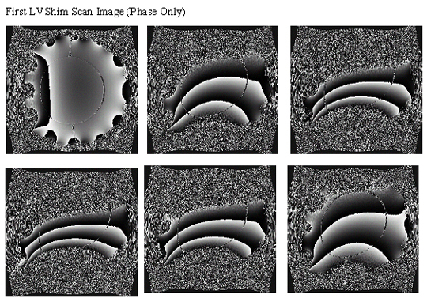
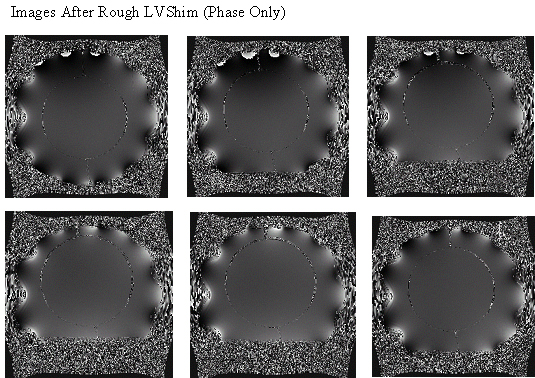

· There are no specifications clearly defining when to use or stop using the Rough LVshim procedure. It is purely subjective based on the shape of the phantom image displayed.
· The objective of Rough LVshim is to obtain enough homogeneity in order to start other system calibrations such as isocenter, Grad Cal and Grafidy. It usually only takes 1 to 2 iterations of Rough LVshim to get to this point.
· Check the uniformity of the 12 images (6 phase images and 6 magnitude images). See Illustration 2, LVshim Images With Poor Uniformity. If the images look like these and are very distorted or weak, try adjusting the X, Y and Z Gradshim values to improve the uniformity of the image. If this is not effective, go to Troubleshooting and Solutions. When the center of the images (22 DSV) have good uniformity (see Illustration 3, LVshim Images With Good Uniformity), then stop the Rough LVshim process and start the other system calibrations.
· Before taking the scan, verify that the helium vessel pressure in the LCC magnet is 4.0 psi ±0.3 psi.
Illustration 2: LVSHIM IMAGES WITH POOR UNIFORMITY

| NOTE: | The overall inhomogeneity number is not accurate when most of the harmonic coefficient numbers are out of spec. |
Illustration 3: LVSHIM IMAGES WITH GOOD UNIFORMITY
